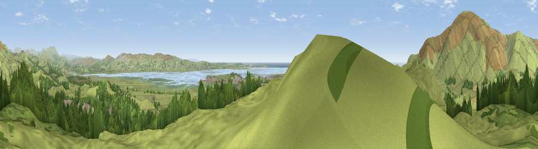

Viewpoint near The Hill
#1920 in England · top 18% of its area beats it · near The HillThe view, rendered

A 360° render of this exact spot computed from the terrain model, tree cover and land cover — summer colours, afternoon light, calibrated against photographs of famous viewpoints. Real trees, hedges and buildings will differ in detail.
The panorama
Grey silhouette: terrain skyline in each direction (720 bearings, Earth curvature and refraction included). Dashed green: skyline with trees (+15 m) and buildings (+8 m) as obstacles. Blue strip: how far the ground is visible on each bearing.
Where the view opens
Wedge length = distance to the farthest visible ground on that bearing (vegetation-aware). Rings at 10, 25 and 50 km.
What fills the view
72% grassland · 17% woodland · 6% water · 2% built-up · 1% wetland · 1% cropland ·
Angular shares of the visible panorama (visual magnitude), not map area. Landscape diversity 0.41 (0–1 Shannon).
Key numbers
More beautiful places nearby
The staircase of upgrades: each row has a higher view potential than everything closer. Driving times are estimates from straight-line distance, calibrated against real road routing — check an actual route before setting out.
| Place | Direction | Drive | Score |
|---|---|---|---|
| Viewpoint near Kirksanton | SW · 1 km | ~4 min | 78.4 |
| Viewpoint near Whicham | WNW · 3 km | ~7 min | 86.6 |
| Viewpoint near Whitbeck | NW · 4 km | ~8 min | 88.1 |
| Viewpoint near Whitbeck | WNW · 5 km | ~11 min | 88.3 |
| Viewpoint near Boot | N · 22 km | ~36 min | 88.9 |
| Viewpoint near Finsthwaite | ENE · 23 km | ~38 min | 90.3 |
| The Knoll | S · 397 km | ~380 min | 91.0 |
54.23380, -3.28656 · source: screening · position refined by local search. Computed location — check access rights before visiting.